<set>
设置新变量
设置新变量，从作用域context或者session中得到变量， 可使用Ognl表达式得到变量的属性和方法，或者自定义ognl类型变量。
var（必须） 设置新的变量
setScope（可选） 设置变量的作用域 属性 context:设置变量到context中（默认） session:设置变量到session中
value（必须）
得到变量值，也可以得到变量相关的Ognl值
可选值
"str":字符串格式
{"e1","e2","e3"}:List格式
#{"key1":"value1","key2":"value2"}:Map格式
valueScope（可选） 变量的作用域 属性 context:从context中得到变量（默认） session:从session中得到变量
从value中得到值设置到var中，<set>的value的用法同<get>的value，
能够从context，session中取值。不同于<get>的是，它会把取到的值设置成新变量。
过程相当于先调用：
Object value = context.getVariable(key)
Object value = context.getSessionVariable(key)
然后新设置变量存放得到的值：
context.setVariable(newKey, value)
context.setSessionVariable(newKey, value)
例子： 在模板或者action中，设置2个变量id和name
set分别得到变量id和name，重新为他们设置新变量id_1和name_1， 其中的name的valueScope为seesion，并用get输出这2个值。
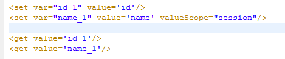
结果
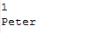
也可以把它们设置到session中，setScope为session
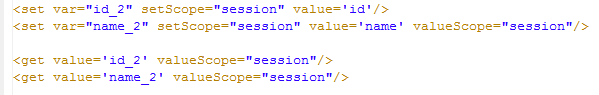
结果
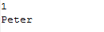
set不仅可以设置从context，session中得到变量，也可以自定义值。
只要是符合Ognl的规范的值都可以设置成新变量。
1.字符串:"字符串"或者'字符串'
2.数字，Ognl根据数字转换的java类型
3.List:{"e1","e2","e3"}
4.Map:#{"key1":"value1","key2":"value2"}
5.Ognl表达式，如 1 == 1，则输出的是true
其中的""都可以用''替换，根据value的引号是''，则用""；value的引号是""，则为''。
例子：
我们分别设置了几个变量：
1.String类型：a和b的值都是str，外层是''，则写成""；反之外层是"",则写成''。
2.数字类型：c的值是1，Ognl认为它是Integer类型；d的值是1.1，Ognl认为它是Double型。
3.List：变量list是列表类型，写法是{"e1","e2","e3"}。
4.Map：变量map是Map类型，写法是#{"key1":"value1","key2":"value2"}
5.Ognl表达式：1 == 1的结果是Boolean型。
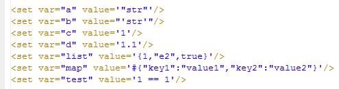
使用get得到它们
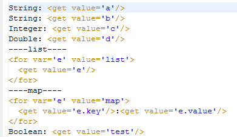
结果
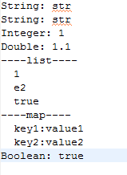
set用来新设变量，新变量的值可以是原先变量的公式，或者原先变量的方法的返回值。
之前设置的变量
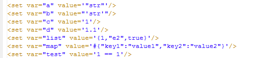
新设变量e， 得到字符串的大写； 新设变量f， 得到一个乘法公式的结果； 新设变量g， 得到list的个数； 新设变量h， 得到Map键key2的值。
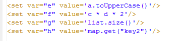
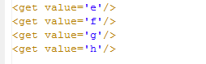
结果
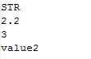